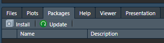

# Números
numero <- 10
nuevo_numero <- 5 + numeroIntroducción a R y RStudio
Para los que nunca han programado, o al menos nunca han programado en R/Rstudio.
Esta guía está basada en este libro.
Instalación de R y RStudio
[Última versión de R] en función del sistema operativo
Partes de la interfaz de RStudio

|
|
|
|
Almacenamiento
Cuando nombren a las variables, traten de usar un formato consistente y los mismos tienen que tener un significado “útil”. Eviten llamar a las cosas por letras o monosílabos.
“Programar produce código y el código es una herramienta de comunicación. Obviamente, el código le dice a la computadora qué es lo que quiere que haga, pero también comunica significado a otros seres humanos. Es importante pensar el código como un medio de comunicación, ya que todo proyecto que realice es esencialmente colaborativo. Aun cuando no esté trabajando con otras personas, definitivamente lo estará haciendo con su futuro yo. Escribir código claro es importante para que otras personas (o usted en el futuro) puedan entender por qué se encaró un análisis de la manera que en la que se hizo. Esto significa que mejorando cómo programa, mejorará también cómo comunica. Con el tiempo querrá que su código resulte no solo más fácil de escribir, sino también más fácil de leer para los demás” (Wickham & Grolemund, 2017).
Con “#” se hacen comentarios en el código, comentar es una excelente práctica, hágalo siempre. Describa lo que está haciendo y los motivos por los cuales lo está haciendo de ese modo.
El comando “Alt + -” produce esto “<-” de forma rápida, que es una asignación. Lo que vamos a usar para almacenar variables, objetos, funciones, etc… por ejemplo:
Observe los resultados en el panel de ambiente (environment)
Números
Letras
Es necesario colocarlas entre comillas, pueden ser las simples o las dobles.
# letras
letra <- "a"
letra_2 <- 'a' # no importa que tipo de comilla se usa, para R son iguales
letra == letra_2[1] TRUEBooleanos
Es decir, falso y verdadero, estos van en MAYÚSCULA.
# note el cambio de color en el script respecto al resto del código
FALSE[1] FALSETRUE[1] TRUE# También se puede abreviar como F y T.
F[1] FALSET[1] TRUECuando no hay data válida se utiliza NA (Not Available) o NaN (Not Available Number), esto puede tener varios significados, como:
Datos faltantes porque se perdieron o no fueron recolectados, por ejemplo, la ausencia de datos en los años 2020-2021 en varias instituciones nacionales por la afectación de la pandemia COVID-19.
Datos no recolectados por su ausencia de pertinencia: consumo eléctrico de una comunidad indígena sin acceso a servicios básicos de electricidad.
Operaciones matemáticas indefinidas, por ejemplo \(\frac{0}{0} = NaN\).
NA[1] NANaN[1] NaN0/0[1] NaN# Otros
Inf[1] Inf-Inf[1] -InfNULLNULLNota: TRUE, FALSE, T, F, NA, NaN, for, if, else, entre otras, son palabras RESERVADAS en el lenguaje de programación R.
Vectores
Para ello se usa la función c() que significa combine.
vector_numerico <- c(1, 2, 3)
vector_numerico[1] 1 2 3is.numeric(vector_numerico)[1] TRUEvector_letras <- c("A", "B", "C")
is.character(vector_letras)[1] TRUE# Si se juntan los dos vectores anteriores, R no da error, solo los convierte
# a todos en caracteres, por lo que hay que tener cuidado.
nuevo_vector <- c(vector_numerico, vector_letras)
nuevo_vector[1] "1" "2" "3" "A" "B" "C"is.numeric(nuevo_vector)[1] FALSEis.character(nuevo_vector)[1] TRUE# Se pueden crear vectores vacíos que luego se pueden llenar
vector_vacio <- c()
vector_vacio2 <- vector()
vector_vacio[1] <- 2 # [1] indica la posición 1 en el vector
vector_vacio[1] 2vector_vacio[2] <- 4
vector_vacio[1] 2 4Operaciones con vectores
vector_numerico + 5[1] 6 7 8vector_numerico + c(5, 6, 7)[1] 6 8 10vector_numerico^2[1] 1 4 9vector_numerico/2[1] 0.5 1.0 1.5vector_numerico*9[1] 9 18 27vector_numerico/c(5, 6, 7)[1] 0.2000000 0.3333333 0.4285714Seleccionar elementos de un vector (slicing)
vector_numerico[1][1] 1vector_numerico[1:3][1] 1 2 3vector_numerico[c(1,2,3)][1] 1 2 3vector_letras[2][1] "B"vector_letras[c(1, 3)][1] "A" "C"vector_letras[-2][1] "A" "C"Secuencias y repeticiones
# Secuencias
1:10 [1] 1 2 3 4 5 6 7 8 9 10seq(1, 10) [1] 1 2 3 4 5 6 7 8 9 10seq(1, 10, by = 0.5) [1] 1.0 1.5 2.0 2.5 3.0 3.5 4.0 4.5 5.0 5.5 6.0 6.5 7.0 7.5 8.0
[16] 8.5 9.0 9.5 10.0seq(1, 10, length = 5)[1] 1.00 3.25 5.50 7.75 10.00# Repeticiones
rep(2, 4)[1] 2 2 2 2rep(vector_letras, 3)[1] "A" "B" "C" "A" "B" "C" "A" "B" "C"rep(vector_letras, each = 3)[1] "A" "A" "A" "B" "B" "B" "C" "C" "C"Matrices
matriz1 <- cbind(vector_numerico, vector_letras)
matriz1 vector_numerico vector_letras
[1,] "1" "A"
[2,] "2" "B"
[3,] "3" "C" matriz2 <- cbind(rep("x", 6), seq(1, 3, length = 6))
matriz2 [,1] [,2]
[1,] "x" "1"
[2,] "x" "1.4"
[3,] "x" "1.8"
[4,] "x" "2.2"
[5,] "x" "2.6"
[6,] "x" "3" El slicing en matrices se hace con operaciones de tipo [row, column].
matriz1[1, ] # la primer fila y todas las columnasvector_numerico vector_letras
"1" "A" matriz1[, 1] # la primer columna y todas las filas[1] "1" "2" "3"matriz1[1, c(1, 2)] # la primer fila y las primeras dos columnasvector_numerico vector_letras
"1" "A" matriz1[c(1, 3), ] # la fila 1 y 3 y todas las columnas vector_numerico vector_letras
[1,] "1" "A"
[2,] "3" "C" Ejemplos similares en la sección de data.frame().
Funciones
Se pueden crear, o usar las que ya existen en R y los respectivos paquetes.
sum(vector_numerico) #suma[1] 6max(vector_numerico) # máximo[1] 3mean(vector_numerico) # promedio[1] 2length(vector_letras) # largo del vector[1] 3?mean()
help(mean)Para ver la ayuda en el panel help, basta con ejecutar este comando: ?mean() o bien help(mean) en el script o en la consola.
Otra forma de hacerlo es presionando la tecla F1 sobre la función.
Paquetes
Hay un montón de paquetes con funciones adicionales, en este curso vamos a usar mucho tidyverse, se pueden instalar paquetes de diversas formas, por ejemplo:
Corriendo la siguiente función
install.packages("tidyverse")en script o en consola.El panel de Packages, con el botón “Install”, luego colocar el nombre del paquete e instalar.


- En “Tools>Install Packages…”

Proyectos
Cree una carpeta con el nombre del proyecto, por ejemplo: “Clases”, dentro de dicha carpeta ordene su trabajo de una forma similar a esta:
- Datos
- Imágenes
- Resultados, etc.
Esto queda a su criterio, pero sea ordenado. Este es un ejemplo de orden para una carpeta:

Lo importante es que mantenga un orden, con nombres claros y subcarpetas de ser necesario.
Directorio de trabajo
R posee el poderoso concepto de directorio de trabajo (working directory en inglés). Aquí es donde R busca los archivos que le pide que lea y donde colocará todos los archivos que le pida que guarde.
# Se utiliza para cambiar el directorio. Se debe colocar entre paréntesis
# y entre comillas la dirección del directorio deseado. Por ejemplo:
setwd("C:/Users/Administrator/Desktop")
# para visualizar en qué directorio se está trabajando
getwd()Pero este es un enfoque algo novato y anticuado. Lo práctico es crear un proyecto.
Crear un proyecto
Las personas expertas en R mantienen todos los archivos asociados a un proyecto en un mismo lugar — datos de entrada, scripts, resultados, gráficos. Esta es una práctica tan acertada y común, que RStudio cuenta con soporte integrado para esto por medio de los proyectos.
Una vez creó la carpeta, se recomienda crear un proyecto, para que R siempre sepa donde está trabajando. En este caso el proyecto se llama igual que la carpeta: “Clases”. Arriba del panel de ambiente se pueden observar el proyecto.

Por lo general dice “Project: (None)”, al dar clic sobre este se despliega lo siguiente, seleccionar “Existing Directory” y buscar la carpeta que crearon anteriormente y listo. Es aconsejable hacer esto para que cada proyecto que vayan a crear.

Cierre RStudio. Inspeccione la carpeta asociada a su proyecto — encontrará que hay un archivo .Rproj allí. Haz doble clic en ese archivo para reabrir el proyecto. Note que al hacer esto, vuelve al punto donde estaba justo antes de cerrar RStudio: es el mismo directorio de trabajo e historial de comandos, y todos los archivos con los que estabas trabajando siguen abiertos.
Tidy data (Datos ordenados)
El análisis de datos nace de manejar datos, valga la redundancia. La forma en la que se expresan los datos pueden ser tan variados como los datos mismos y tener un estándar para trabajar los datos es casi tan importante como tener los mismos datos.
Tidy data es un estándar de manejo de datos, en donde el significados de los datos está expresado en su estructura. Se trabaja con datos rectangulares, es decir, tablas, donde:
- Cada variable es una columna
- Cada observación de la población estudiada es una fila
- Cada tipo de información es una tabla.
Más detalle lo pueden encontrar en este linK: https://r4ds.had.co.nz/tidy-data.html
Tidy data es sumamente importante en R, porque así es como se construyen las tablas en este lenguaje de programación.
Tablas
Se pueden escribir tanto a mano como usando vectores (como los creados previamente)
vector_letras <- c("D", "E", "F")
vector_numerico <- c(4, 5, 6)
tabla <- data.frame(Columna1 = c("Fila 1", "Fila 2", "Fila 3"),
Columna2 = vector_letras,
Columna3 = vector_numerico,
"Columna 4" = rep(1,3))
tabla Columna1 Columna2 Columna3 Columna.4
1 Fila 1 D 4 1
2 Fila 2 E 5 1
3 Fila 3 F 6 1Para acceder a las diferentes posiciones de una tabla, se puede hacer de diferentes formas:
# por su nombre
tabla$Columna1[1] "Fila 1" "Fila 2" "Fila 3"tabla$Columna2[1] "D" "E" "F"tabla[, "Columna1"][1] "Fila 1" "Fila 2" "Fila 3"# por su posición
## Primera fila y todas las columnas
tabla[1, ] # [Fila, Columna] Columna1 Columna2 Columna3 Columna.4
1 Fila 1 D 4 1## Primera y segunda fila y todas las columnas
tabla[c(1,2), ] Columna1 Columna2 Columna3 Columna.4
1 Fila 1 D 4 1
2 Fila 2 E 5 1## Primera fila y segunda columna
tabla[1, 2][1] "D"## Primera columna
tabla[, 1][1] "Fila 1" "Fila 2" "Fila 3"Y así, sucesivamente…
También se pueden agregar columnas nuevas de esta forma:
tabla$Columna4 <- c(10, 20, 30)
tabla$Estudiantes <- c("X", "Y", "Z")
tabla Columna1 Columna2 Columna3 Columna.4 Columna4 Estudiantes
1 Fila 1 D 4 1 10 X
2 Fila 2 E 5 1 20 Y
3 Fila 3 F 6 1 30 ZLas tablas también se pueden cargar, de texto plano (.csv, .txt, .tsv, etc), MS Excel, objetos de R, entre otros.
library(readr)
# esta forma de programar se puede denominar como explícita, en el tanto
# especifica paquete::función()
consumo <- readr::read_csv("datos/ConsumoElectrico.csv")
consumo# A tibble: 74 × 4
Consumo Zona Tipo Habitantes
<dbl> <chr> <dbl> <dbl>
1 274 A 1 3
2 186 A 1 7
3 49 A 1 4
4 249 A 1 4
5 76 A 1 3
6 315 A 1 4
7 194 A 1 6
8 113 A 0 2
9 121 A 0 4
10 263 A 0 3
# ℹ 64 more rowsPara leer archivos de MS Excel vamos a usar este paquete y función:
openxlsx::read.xlsx()
# estos son los datos del primer reporte
julio2022 <- openxlsx::read.xlsx("datos/Julio2022.xlsx")Observaciones finales
Vamos a dejar como estudio individual aspectos “clásicos” de la programación como for, if, else, while, etc. Bajo el supuesto de que se ven en principios de informática.
Manejo de datos
Empecemos por cargar las librerías, esto va por gustos, pero yo prefiero tener todas las librerías en un solo lugar, por ejemplo:
library(tidyverse)
library(janitor)
library(corrplot)Habrán notado que me gusta mucho usar esta notación: paquete::funcion(), esto lo hago por que permite al menos dos cosas muy útiles:
- Llamar a una función siempre y cuando el paquete esté instalado, sin tener que llamar el paquete completo.
- Especificar el paquete del que se quiere usar la función, cuando se llaman igual en dos paquetes distintos que se estén utilizando, por ejemplo:
stats::filter()
dplyr::filter()OJO, aunque yo lo recomiende, no significa que sea necesario.
Carga de datos
Bien, ahora carguemos los datos:
datos <- readr::read_csv("datos/Notas.csv")
datos# A tibble: 4 × 3
Nombre Nota Sexo
<chr> <dbl> <chr>
1 Hugo 84.6 M
2 Paco 71.2 M
3 Luis 90.5 M
4 Daisy 96.7 F head(datos, 2) # los primeros 2 datos# A tibble: 2 × 3
Nombre Nota Sexo
<chr> <dbl> <chr>
1 Hugo 84.6 M
2 Paco 71.2 M names(datos) # los nombres de las variables de los datos[1] "Nombre" "Nota" "Sexo" tail(datos, 2) # los últimos 2 datos# A tibble: 2 × 3
Nombre Nota Sexo
<chr> <dbl> <chr>
1 Luis 90.5 M
2 Daisy 96.7 F str(datos) # la estructura de datosspc_tbl_ [4 × 3] (S3: spec_tbl_df/tbl_df/tbl/data.frame)
$ Nombre: chr [1:4] "Hugo" "Paco" "Luis" "Daisy"
$ Nota : num [1:4] 84.6 71.2 90.5 96.7
$ Sexo : chr [1:4] "M" "M" "M" "F"
- attr(*, "spec")=
.. cols(
.. Nombre = col_character(),
.. Nota = col_double(),
.. Sexo = col_character()
.. )
- attr(*, "problems")=<externalptr> summary(datos) # resumen de los datos Nombre Nota Sexo
Length:4 Min. :71.20 Length:4
Class :character 1st Qu.:81.25 Class :character
Mode :character Median :87.55 Mode :character
Mean :85.75
3rd Qu.:92.05
Max. :96.70